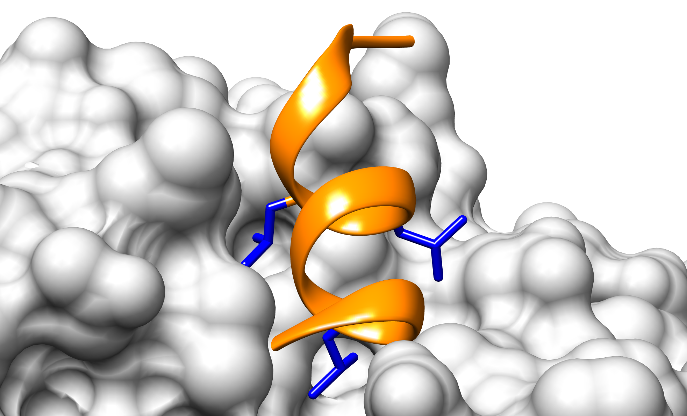

TP 10. Motivos lineales
Atención: Este TP tiene informe.
Recursos Online
- Regex101 https://regex101.com
- UniProt http://www.uniprot.org/
- ELM http://elm.eu.org
Objetivos
- Familiarizarse con la simbología utilizada en expresiones regulares
- Utilizar la simbología para poder realizar búsquedas basadas en texto
Introducción
La simbología comúnmente utilizada en expresiones regulares es:
| Símbolo | Definición |
|---|---|
| . | Cualquier aminoácido es permitido |
| [XY] | Solo los aminoácidos X e Y son permitidos |
| [^XY] | Los aminoácidos X e Y están prohibidos |
| {min,max} | Número mínimo y máximo de veces que se puede repetir una posición |
| ^X | El aminoácido X se encuentra en el extremo N-terminal |
| X$ | El aminoácido X se encuentra en el extremo C-terminal |
| (AB)|(CD) | Se encuentran, o bien, los aminoácidos AB, o bien, los aminoácidos CD |
Estos símbolos nos permiten definir patrones que son observados en proteínas naturales para luego identificarlos en otras proteínas y ser puestos a prueba experimentalmente.
Ejercicios
Ejercicio 1. Familiarizándonos con las Expresiones Regulares
Los receptores nucleares interactúan con diversas proteínas mediantes un motivo lineal llamado NRBox (Nuclear Receptor Box) (Heery,1997). Existen numerosas estructuras de péptidos unidos a diferentes receptores nucleares (PDBs: 3CS8, 2GPO, 1GWQ, 1RJK, 1M2Z) que permitieron estudiar y entender algunas características de la interacción.
La evidencia experimental recolectada de la literatura indica que:
-
El motivo NRBox forma una hélice alfa
-
Existen tres leucinas que se encuentran en una misma cara de la hélice que interactúan con un bolsillo hidrofóbico en la superficie del receptor nuclear (Figura 1).

Figura 1. Fragmento de la proteína PGC-1 alfa unido al receptor nuclear PPAR-gamma. Se muestra en naranja el backbone de la proteína representado en Cartoon y en azul las tres leucinas que median la interacción representadas en Sticks (PDB:3CS8) y que conforman el motivo NRBox.
Los siguientes fragmentos de secuencia corresponden a regiones de distintas proteínas que interactúan con diversos receptores nucleares y cuya interacción se verificó de manera experimental por distintos métodos.
>sp|Q15648|MED1_HUMAN|644-650
SMAGNTKNHPMLMNLLKDNPAQDFSTL
>sp|O43593|HAIR_HUMAN|565-571
AKHLLSGLGDRLCRLLRREREALAWAQ
>sp|Q16881-4|TRXR1_HUMAN|46-52
GPTLKAYQEGRLQKLLKMNGPEDLPKS
>sp|P48552|NRIP1_HUMAN|500-506
DVHQDSIVLTYLEGLLMHQAAGGSGTA
>sp|Q9UQ80|PA2G4_HUMAN|353-359
YKSEMEVQDAELKALLQSSASRKTQKK
>sp|Q90ZL7|Q90ZL7_DANRE|69-75
VQHADGEKSNVLRKLLKRANSYEDAVM
>sp|Q9UBK2|PRGC1_HUMAN|143-149
PPPQEAEEPSLLKKLLLAPANTQLSYN
>sp|Q9JL19|NCOA6_MOUSE|1494-1500
MSPAMREAPTSLSQLLDNSGAPNVTIK
>sp|Q15596|NCOA2_HUMAN|689-695
HGTSLKEKHKILHRLLQDSSSPVDLAK
>sp|Q92793|CBP_HUMAN|69-75
LVPDAASKHKQLSELLRGGSGSSINPG
1. Copie y pegue las secuencias en el recuadro de Test String en regex101 https://regex101.com y pruebe encontrar una expresión regular que permita identificar el motivo que media la interacción de estas proteínas con los receptores nucleares y que cumpla con la evidencia experimental observada.
Regex101
No es una herramienta que se use en bioinformática. Simplemente es un recurso educativo para entender Expresiones Regulares.
En R hay funciones como grep o gregexpr que permiten identificar expresiones regulares y en python hay todo una librería re dedicada a expresiones regulares.
2. Considerando que el motivo se encuentra en una hélice, ¿modificaría la expresión regular que obtuvo?
Ejercicio 2. Base de datos de motivos lineales en Eucariotas (ELMdb)
La base de datos ELM (Eukaryotic Linear Motifs) es una base de datos que se enfoca principalmente en la anotación y detección de motivos lineales (MLs). Para ello cuenta con un repositorio de motivos manualmente anotados, por lo cual está altamente curada y también cuenta con una herramienta de predicción de motivos. Esta predicción de motivos se realiza mediante una búsqueda de patrones de secuencia basada en texto utilizando expresiones regulares.
Las instancias anotadas (es decir, probadas experimentalmente) pueden ser:
- True Positives: Una instancia anotada con evidencia experimental que demuestra que es funcional.
- False Positives: Una instancia anotada con evidencia experimental que sugiere que es funcional. Pero luego de una inspección cuidadosa de los anotadores se cree que la instancia en realidad no es funcional.
- True Negative: Una instancia anotada donde los experimentos muestren que es no funcional.
- Unknown: No se encontró evidencia suficiente para determinar si la instancia es funcional o no.
1. Busque en ELMdb en la pestaña Prediction la proteína PGC-1-alpha, una de las proteínas de la lista que usamos en el Ejercicio 1, utilizando el accession number o uniprot ID (Q9UBK2 - PRGC1_HUMAN).
Para cada motivo encontrado, se indica con símbolos (descriptos en la parte superior de la página) si la instancia del motivo es predicha o fue identificada experimentalmente (anotadas o "True Positives"). Responda:
- ¿Encuentra el motivo NRBox entre los True positives?
- ¿Cuántas instancias True Positive existen para esta proteína?
- ¿Cómo es la estructura de la proteína donde se encuentran estos motivos?
2. Pegue y copie la siguiente secuencia en ELM y utilice los parámetros que se indican a continuación.
>seq
MEEPQSDPSVEPPLSQETFSDLWKLLPENNVLSPLPSQAMDDLMLSPDDI
EQWFTEDPGPDEAPRMPEAAPPVAPAPAAPTPAAPAPAPSWPLSSSVPSQ
KTYQGSYGFRLGFLHSGTAKSVTCTYSPALNKMFCQLAKTCPVQLWVDST
PPPGTRVRAMAIYKQSQHMTEVVRRCPHHERCSDSDGLAPPQHLIRVEGN
LRVEYLDDRNTFRHSVVVPYEPPEVGSDCTTIHYNYMCNSSCMGGMNRRP
ILTIITLEDSSGNLLGRNSFEVRVCACPGRDRRTEEENLRKKGEPHHELP
PGSTKRALPNNTSSSPQPKKKPLDGEYFTLQIRGRERFEMFRELNEALEL
KDAQAGKEPGGSRAHSSHLKSKKGQSTSRHKKLMFKTEGPDSD
Asegúrese que los valores de los distintos parámetros son los siguientes:
Cell Compartment: Not specified
Motif Probability Cutoff: 100
Taxonomic context: (leave blank)
- ¿Cuántas instancias predichas de motivos se encuentran? Para verlo investigue la tabla llamada Filtering Summary. ¿Cuántas son retenidas luego del filtro?
- ¿Qué se puede decir sobre la estructura de la proteína? ¿Se observa algún dominio? ¿Se observan regiones desordenadas?
- ¿Los predictores estructurales y filtros (SMART, GlobPlot, IUPRED, Secondary Structure) coinciden sobre qué regiones son estructuradas/desordenadas?
3. Por si no se dió cuenta, la proteína utilizada en el ejercicio anterior es p53 de humanos.
- ELM nos permite fitrar por compartimento celular ¿Porqué consideran que esto sería útil?
Utilizando el uniprot ID de p53 (P53_HUMAN) busque en la web de Uniprot (https://www.uniprot.org/) las posibles localizaciones subcelulares de esta proteína y utilícelas como filtro en ELM. Para esto:
Abra en una nueva pestaña la página de ELM. Vaya de nuevo a la pestaña de predicción. Limpie el formulario con el botón Reset Form. Ingrese el Uniprot ID de la proteína (P53_human) y asigne en Cell compartment los compartimentos correspondientes utilizando Ctrl para seleccionar más de uno.
-
Realice la predicción y conteste: ¿Cuántas instancias de motivos se encuentran ahora? ¿Cuántas instancias de motivos son retenidas luego del filtro? ¿A qué se debe esta diferencia con el punto anterior?
-
Investigue el motivo
CLV_PCSK_FUR_1en la predicción realizada sólo con la secuencia. ¿Por qué cree que fue filtrado? -
¿Cuántas instancias anotadas como true positive posee esta proteína? Compare la ubicación de las instancias anotadas con la información estructural proveniente de IUPred.
-
¿Cuántas instancias de la clase
MOD_CK1_1se encontraron? ¿Cuál es la diferencia entre estas instancias? -
¿Cuántos degrons anotados hay en p53? ¿Cuál es la función de estos motivos?
-
¿Existe algún sitio anotado CDK (Cyclin Dependent Kinase) en p53?
-
¿Existe algún sitio anotado
DOC_CYCLIN_RXL_1? ¿Qué relación funcional existe entre este sitio y el sitio CDK?
4. Abra una nueva pestaña y vaya de nuevo a la pestaña de predicción. Manteniendo los compartimentos celulares seleccionados para p53, ingrese el Uniprot ID (P53_HUMAN) y modifique el parámetro:
Motif Probability Cutoff: 0.01 (Recuerde que en el punto anterior este parámetro era de 100)
-
¿Cuántas instancias predichas de motivos se encuentran ahora? ¿Cuántas instancias de motivos son retenidas luego del filtro?
-
¿Por qué cree que es útil usar el umbral de probabilidad del motivo?
5. Abra una nueva pestaña y vaya de nuevo a la pestaña de predicción. Manteniendo los compartimentos celulares seleccionados para p53, ingrese el Uniprot ID (P53_HUMAN) y modifique el parámetro:
Taxonomic Context: Homo sapiens
-
¿Cuántas instancias predichas de motivos se encuentran ahora? ¿Cuántas instancias de motivos son retenidas luego del filtro?
-
¿Por qué cree que es útil usar el contexto taxonómico?
5. Busque la proteína P53_MOUSE en ELM.
- ¿Existen instancias anotadas?
- ¿Existen instancias asignadas por homología? ¿A qué organismo pertenecen?
Ejercicio 3. Identificación de motivos cortos de interacción en p53 en un alineamiento propio.
La región amino terminal de p53 posee un motivo de unión a la E3 ligasa MDM2, el cual está caracterizado por una secuencia conservada que puede representarse por una expresión regular.
-
Entre en la base de datos ELM y busque la expresión regular del motivo con el ID:
DEG_MDM2_SWIB_1. Para esto ingrese el ID en la parte superior derecha donde dice: Search ELM database. La expresión regular se encuentra marcada como "Pattern". A continuación, busque las ocurrencias de esta expresión regular en las secuencias de p53. Para ello, abra en Jalview el alineamiento de p53 con el cuál estuvo trabajando en la clase de TP N°9 - Predicción de desorden. Jalview permite la búsqueda de motivos por expresiones regulares. Para hacerlo, utilice la función:Select → Find
En la ventana tipee la expresión regular. Si este procedimiento falla, y tiene la ventana de las secuencias no alineadas abiertas, ciérrela. Si aún así falla, identifique el motivo utilizando el filtro de conservación.
-
¿Todas las secuencias de p53 tienen el motivo de interacción con MDM2?
- ¿Todos los motivos MDM2 tienen la misma longitud de secuencia?
- ¿Qué nivel de identidad de secuencia observa en esta región? ¿A qué puede deberse?
Ejercicio a informar
Fecha límite de entrega: Viernes, 14 de Octubre 2022, 23:59hs.
Enunciado
Su jefe también está interesado en que Ud. entienda más sobre los mecanismos de entrada del virus a la célula, la cual está mediada por la enzima convertidora de angiotensina 2 (ACE2) (Uniprot ID: ACE2_HUMAN2, Q9BYF1). Luego de unirse la proteína Spike a ACE2, se desencadena la entrada del virus SARS-CoV-2 a las células pulmonares por un mecanismo llamado endocitosis mediada por receptor, en el cual participan muchos motivos lineales.
1. Según los métodos utilizados en el trabajo práctico de desorden identifique las regiones desordenadas del receptor, e investigue ¿En qué compartimento celular se encuentran esta/s región/es?
2. Algunos de los motivos conocidos involucrados en la vía de endocitosis mediada por receptor son: TRG_ENDOCYTIC_2, LIG_LIR_Gen_1, LIG_PTB_APO2.
- ¿En qué compartimentos celulares deberían encontrarse proteínas como ACE2?
- Estos motivos ¿se encuentran en la secuencia humana del receptor?
- ¿Cuántas instancias de cada uno de los motivos encuentra, en qué posiciones y cuáles creen que son buenos candidatos?
- De los tres motivos ¿Existen algunos candidatos que son mejores que otros? Si es así, responda ¿Por qué son mejores?
Atención
Siempre que reporte una región o instancia de un motivo indique las posiciones de inicio y final de la misma. Para cada respuesta, indicar los algoritmos, base de datos y métodos utilizados, y el criterio usado en cada caso para clasificar/identificar.
3. Un criterio para clasificar un buen motivo candidato es que esté conservado en >50% de un conjunto de secuencias divergentes. Utilizando las expresiones regulares y el conjunto de secuencias de ACE2 (que se encuentran en el archivo ACE2_secuencias.fasta), indique cuáles de las instancias de los motivos seleccionados en (2) son buenos candidatos según su conservación.
- Si bien es un alineamiento de proteínas homólogas ¿Encuentra variaciones en la secuencia de los motivos en las diferentes secuencias? ¿Cuáles?
Extra! (y por ende opcional)
-
La presentación de resultados con figuras que faciliten la compresión es una de las partes más importantes de un informe. Una forma muy linda de visualizar las posiciones de los motivos reportados es marcarlas en un gráfico de desorden cambiando el color de los puntos. ¿Se animan?
-
El punto 3 se puede hacer utlizando R. Para esto primero va a necesitar instalar la librería
bioseq(tarda) para poder leer el alineamiento con la funciónread_fasta. Luego, se puede utilizar la funcióngregexprpara buscar la expresión regular del motivo de interés y cuantificar su presencia en el alineamiento, prestando atención a la posición que se lo espera encontrar, claro!.
gregexpr
Esta función devuelve una lista. Las posiciones de la lista se acceden como lista[[i]] donde i es un número.
RegEx en alineamientos
En un alineamiento de secuencias tenemos gaps que pueden interrumpir la secuencia. Deben modificar la RegEx de manera que esto no suceda. Ejemplo:
R.L pasaría a ser R-*.-*L